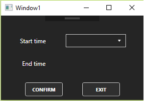

Pocetni prozor nam omogucava manipulisanja sa rasporedom racunarskog cetra tj. dodjeljivanje predmeta koji nisu rasporedjeni ucionici.U gornjem dijelu prozora imamo precice za tabove za manipulaciju sa predmetima(3), smjerovima(2), ucionicama(1) i softverom(4). Sa lijeve strane prozora imamo podatke za izabranu ucionicu sa kojom zelimo raditi (5) takodje imamo padajuci meni za izbor ucionice (6). Ovi podatci se ne mogu mjenjati na pocetnoj strani. Sa desne strane se nalazi jedan padajuci meni za izbor dana u sedmici (7) za koji zelimo mjenjati raspored i jos dvije liste(jedna za nerasporedjene predmete (8) a druga za trenutni raspored u ucionici za izabrani dan (9)).
Prvo biramo ucinicu ciji raspored zelimo da mjenjamo. Zatim moramo izabrati dan u nedelji koji za koji cemo mjenjati raspored. Kada izaberemo dan u gornjoj listi ce nam se pojaviti svi predmeti koji nisu rasporedjeni a koji se mogu odrzati u ucionici (ucionica zadovoljava sve zahtjeve predmeta). Ukoliko ne izaberemo ucionicu ili dan dobicemo a kliknemo na neku od listi dobicemo upozorenje da izaberemo ucionicu ili dan. Da bi bi ubacili predmet u ucionicu koristimo prevlacimo predmet iz gornje liste u donju listu nakon cega se otvara pomocni meni.
Iz padajuceg menija biramo pocetak predavanja. Nisu ponudjeni termini koji su zauzeti drugim predavanjima. Kada odaberemo pocetak potvrdjujemo akciju na dugme "Confirm". U donjoj listi ce biti prikazan prezan predmet i vremena pocetka i zavrsetka, a iz gornje liste predmet ce biti uklonjen ukoliko nemamo vise termina predmeta. Brisanje iz dodje liste je moguce iz kontekstog menija koji dobijamo desnim klikom na zeljeni predmet u donjoj listi. Biramo ponudjenu opciju "Remove".
Tab za rad sa ucinicama nam omugucuje dodavanje novih ucinica, izmjenu postojecih ucionica, brisanje ucionica, tabelarni prikaz svih svih ucionica, sortiranje ucionica po nekom kriterijumu i pretragu ucionica po opisu.
Na lijevoj strani prozora se nalazi dio u kome su prikazani podaci selektovane ucinice. Takodje ovaj dio nam sluzi za dodavanje nove ucionice. Kada selektujemo neku ucionicu u tabelarnom prikazu njeni podaci se automatski prikazuju u ovom dijelu i mozemo ih azurirati. Tabelarni prikaz je read only i nije moguce mjenjati kroz njega podatke o ucionicama.
Na desnoj strani prozora imamo tabelarni prikaz i tekstualno polje za pretrazivanje ucinica po opisu. Kada unesemo tekst po kome zelimo pretrazivati potrebno je da kliknemo na dume "Search" koje se nalazi sa desne strane tekstualnog polja. Da bi se opet vratili na prikaz svih ucionica moramo obrisati tekst iz tekstualnog polja i opet kliknuti na dugme "Search".
U donjem dijelu prozora se nalaze 3 dugmeta za update, dodavanje novih ucionica i brisanje selektovane ucionice. Brisanje i update nije moguce izvrsiti ako prethodno neka ucinica nije selektovana. Takodje nije moguce selektovati vise ucinica istovremeno
Tab za rad sa smjerovima nam omugucuje dodavanje novih smjerova, izmjenu postojecih smjerova, brisanje smjerova, tabelarni prikaz svih svih smjerova, sortiranje smjerova po nekom kriterijumu i pretragu smjerova po nazivu.
Na lijevoj strani prozora se nalazi dio u kome su prikazani podaci selektovanog smjera. Takodje ovaj dio nam sluzi za dodavanje novog smjera. Kada selektujemo neki smjer u tabelarnom prikazu njegovi podaci se automatski prikazuju u ovom dijelu i mozemo ih azurirati. Tabelarni prikaz je read only i nije moguce mjenjati kroz njega podatke o smjerovima.
Na desnoj strani prozora imamo tabelarni prikaz i tekstualno polje za pretrazivanje smjerova po nazivu smjera. Kada unesemo tekst po kome zelimo pretrazivati potrebno je da kliknemo na dume "Search" koje se nalazi sa desne strane tekstualnog polja. Da bi se opet vratili na prikaz svih ucionica moramo obrisati tekst iz tekstualnog polja i opet kliknuti na dugme "Search".
U donjem dijelu prozora se nalaze 3 dugmeta za update, dodavanje novog smjera i brisanje selektovanog smjera. Brisanje i update nije moguce izvrsiti ako prethodno neki smjer nije selektovan. Takodje nije moguce selektovati vise smjerova istovremeno.
Tab za rad sa predmetima nam omugucuje dodavanje novih predmeta, izmjenu postojecih predmeta, brisanje predmeta, tabelarni prikaz svih svih predmeta, sortiranje predmeta po nekom kriterijumu i pretragu predmeta po nazivu takodje dodavanje zahtjevanih softvera predmetima.
Na lijevoj strani prozora se nalazi dio u kome su prikazani podaci selektovanog predmeta. Takodje ovaj dio nam sluzi za dodavanje novog predmeta. Kada selektujemo neki predmeta u tabelarnom prikazu njegovi podaci se automatski prikazuju u ovom dijelu i mozemo ih azurirati. Tabelarni prikaz je read only i nije moguce mjenjati kroz njega podatke o predmetima.
Na desnoj strani prozora imamo tabelarni prikaz i tekstualno polje za pretrazivanje predmeta po nazivu predmeta. Kada unesemo tekst po kome zelimo pretrazivati potrebno je da kliknemo na dume "Search". koje se nalazi sa desne strane tekstualnog polja. Da bi se opet vratili na prikaz svih ucionica moramo obrisati tekst iz tekstualnog polja i opet kliknuti na dugme "Search".
U donjem dijelu prozora se nalaze 3 dugmeta za update, dodavanje novog predmeta i brisanje selektovanog predmeta. Brisanje i update nije moguce izvrsiti ako prethodno neki predmetnije selektovan. Takodje nije moguce selektovati vise predmeta istovremeno.
Tab za rad sa softverom nam omugucuje dodavanje novih softvera, izmjenu postojecih softvera, brisanje softvera, tabelarni prikaz svih svih softvera, sortiranje softvera po nekom kriterijumu i pretragu softvera po nazivu.
Na lijevoj strani prozora se nalazi dio u kome su prikazani podaci selektovanog softvera. Takodje ovaj dio nam sluzi za dodavanje novog softvera. Kada selektujemo neki softver u tabelarnom prikazu njegovi podaci se automatski prikazuju u ovom dijelu i mozemo ih azurirati. Tabelarni prikaz je read only i nije moguce mjenjati kroz njega podatke o softveru.
Na desnoj strani prozora imamo tabelarni prikaz i tekstualno polje za pretrazivanje softvera po nazivu softvera. Kada unesemo tekst po kome zelimo pretrazivati potrebno je da kliknemo na dume "Search". koje se nalazi sa desne strane tekstualnog polja. Da bi se opet vratili na prikaz svih ucionica moramo obrisati tekst iz tekstualnog polja i opet kliknuti na dugme "Search".
U donjem dijelu prozora se nalaze 3 dugmeta za update, dodavanje novog softvera i brisanje selektovanog softvera. Brisanje i update nije moguce izvrsiti ako prethodno neki softver nije selektovan. Takodje nije moguce selektovati vise softvera istovremeno.